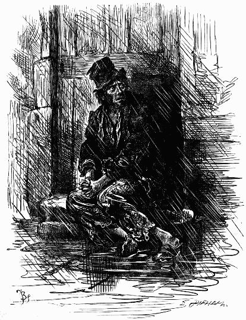
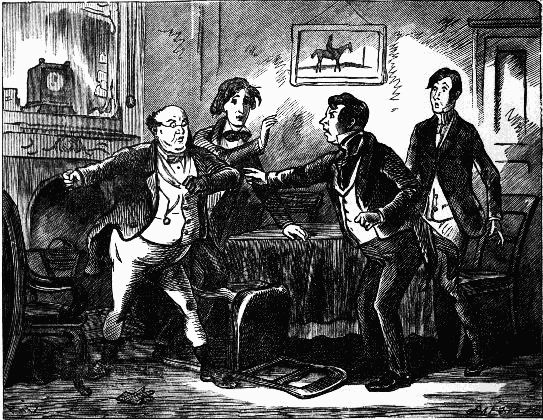

Transcriber's Note: Cover has been created by the transcriber and is placed in the public domain.
SCENES AND CHARACTERS
FROM THE WORKS OF
CHARLES DICKENS
BEING EIGHT HUNDRED AND SIXTY-SIX
PICTURES PRINTED FROM THE ORIGINAL
WOOD BLOCKS
SCENES AND CHARACTERS
FROM THE WORKS OF
CHARLES DICKENS
BEING EIGHT HUNDRED AND
SIXTY-SIX DRAWINGS BY
| FRED BARNARD |
GORDON THOMSON |
| HABLOT K. BROWNE (Phiz) |
J. McL. RALSTON |
| J. MAHONEY |
H. FRENCH |
| CHARLES GREEN |
E. G. DALZIEL |
| A. B. FROS |
TF. A. FRASER |
| and SIR LUKE FILDES |
PRINTED FROM THE ORIGINAL WOODBLOCKS
ENGRAVED FOR "THE HOUSEHOLD EDITION"
THE MUSSON BOOK CO. LIMITED
LONDON ENGLAND TORONTO CANADA
Printed by Ballantyne & Co. Limited
Tavistock Street, Covent Garden, London
LIST OF WORKS AND ARTISTS
THERE is one question upon which the critics and lovers of Dickens seem never able to get into agreement, and that is the question of the original illustrations to his works. To the thorough-going enthusiast Phiz and Dickens seem inseparable, and no edition which does not contain the old, familiar grotesques of Hablot Browne's imagination, or, in the earlier volume, the equally abnormal lineaments portrayed by Cruikshank or Seymour, would be deemed worthy of a place upon his bookshelf. But a younger generation is growing up, for whom the time-honoured pictures have not the charm of long association, and among them it is common to hear the complaint that the natural humour and pathos of the author's best works are spoiled to modern fancy by the violent caricatures of the illustrator. "Let us abolish these pictures altogether," they say: "and illustrate the books with pretty conventionalities by more fashionable artists." At the opposite pole stands yet another group of critics—the "Superior People" who have made up their minds that Dickens himself was a caricaturist, and that therefore the early illustrations, even if they do a little emphasise his exaggerations, are only conceived in fitting harmony with a world of fancy which drowns itself in excesses of the grotesque. Among so many doctors, and all so emphatic, who shall decide? It is, at any rate, no easy task.
It happens, however, that there does exist a series of Dickens illustrations, now in some danger of being unduly neglected, in which the artists were wonderfully happy in preserving the original features of Phiz and Cruikshank's interpretations, while they toned down the more extravagant details and brought imagination into closer harmony with reality. These were the illustrations to the square-shaped "Household Edition," published in 1870, just after the great novelist's death—and now reissued in this Dickens picture-book, in the hope that those who love the stories may like to possess in separate form what is, perhaps, the best pictorial accompaniment that the novels ever received. At the time of its first publication, the "Household Edition" enjoyed an enormous success. At the moment the name of Dickens was on every one's lips, and the fact that this splendidly illustrated reprint was issued in penny numbers and sixpenny parts placed it within reach of even the most humbly stocked purse. Its sale was stupendous, and the familiar green-covered pamphlets percolated through every town and village where the English tongue is spoken. The original copies may still be met with, under many a country timbered roof, carefully treasured as one of the most cherished household possessions.
Undoubtedly, a great part of the success was due to the art of the illustrators. To begin with, there was an unusually liberal display of pictures—the edition, as a whole, containing close upon nine hundred. But more important than the number were the truth and sincerity of the interpretations—qualities which helped to give a new life to characters already secure of immortality. First and foremost, of course, the edition will always be associated with the memory of Fred Barnard, whose pictures are the outstanding feature of the present volume. Barnard seemed destined by nature to illustrate Dickens; the spirit of "Boz" ran again in his veins. And nothing in his work is more impressively ingenious than the skill with which he took the types already created by his predecessors, preserved their characteristics, so that each was unmistakably himself, and yet by the illuminating touch of genius transferred them every one from the realm of caricature to that of portraiture. Not far inferior to him was that admirable draughtsman, Charles Green, who exactly adopted Barnard's attitude to the originals. The reader who will compare Green's illustrations to "The Old Curiosity Shop" with Phiz's, will scarcely fail to notice with interest how often Green has chosen the same subject as his predecessor, and all but treated it in the same manner, save that a twisted grotesque suddenly becomes, under the magic of his wand, a natural human being. His picture of Sally Brass and the Marchioness is a remarkable instance in point: but there are many others equally eloquent of his sympathetic and interpretative method. Nor should the work of Mahony, A. B. Frost, Gordon Thomson and others be forgotten, for each in his own way has helped to make this volume, what its publishers confidently claim it to be, a collection of Dickens pictures unrivalled for humour, pathos, character, and interpretative skill. In the certainty that such a gallery of good work can hardly fail to find appreciators, the volume is now offered to all lovers of the most widely popular author of the Victorian Era.
ILLUSTRATIVE OF
EVERY-DAY LIFE AND
EVERY-DAY PEOPLE.
THIRTY-FOUR ILLUSTRATIONS
BY FRED BARNARD
The Half-pay Captain completely effaced the old lady's name from the brass door-plate in his attempts to polish it with aqua-fortis—Our Parish, chap. ii.
"Why the Devil ain't you looking after that plate?"—Our Parish, chap. v.
When he first came to look at the lodgings, he inquired most particularly whether he was sure to be able to get a seat in the Parish Church—Our Parish, chap. vii.
"It is nearly eleven o'clock, and the cold thin rain, which has been drizzling so long, is beginning to pour down in good earnest"—Scenes, chap. ii.
The Gravesend boat.—Scenes, chap. x.
Different women of the House gossiping on the steps . . . the native Diallers—Scenes, chap. v.
It was a wedding party and sketched from one of the interior streets near Fitzroy Square—Scenes, chap. vii.
The Gentleman described looks extremely foolish, and squeezes her hand, and fees the Gipsy liberally—Scenes, chap. xii.
"I may as well get board, lodgin', and washin' till then, out of the country, as pay for it myself; consequently here goes"—Scenes, chap. xvii.
"His line is genteel comedy—his father's coal and potato. He does Alfred Highflier in the last piece, and very well he'll do it—at the price."—Scenes, chap. xiv.
Tureens of soup are emptied with awful rapidity—Scenes, chap. x. 19
A gin-shop—Scenes, chap. xxii.
The Pawnbroker's Shop—Scenes, chap. xxiii. 
Children were playing on the grass; groups . . . chatting and laughing; but the man walked steadily up and down, unheeding and unheeded—Characters, chap. i.
"What do you mean by that, Scoundrel?" exclaimed Mr. Samuel Wilkins. . . . "What's the matter with you, you little Humbug?" replied Whiskers—Characters, chap. iv.
 The Prisoners' van—Characters, chap. xii.
The Prisoners' van—Characters, chap. xii.
 Hurrying along a by-street, keeping as close as he can to the area railings, a Man of about forty or fifty, clad in an old rusty suit of threadbare black cloth—Characters, chap. x.
Hurrying along a by-street, keeping as close as he can to the area railings, a Man of about forty or fifty, clad in an old rusty suit of threadbare black cloth—Characters, chap. x.
"I received a note"—he said tremulously, in a voice like a Punch with a cold—"Yes," returned the other, "You did,"—"Exactly,"—"Yes"—Tales, Chap. i.
"No what?" inquired Mrs. Bloss with a look of the most indescribable alarm "No stomach," repeated Mrs. Tibbs with a shake of the head—Tales, chap. i.
The dear little fellow, having recovered his animal spirits, was standing upon her soft tender foot—Tales, chap. iii.
"So exactly the air of the Marquis," said the Military Gentleman—Tales, chap. iv.
"How delightful, how refreshing it is, to retire from the cloudy storms, the vicissitudes, and the troubles of life, even if it be but for a few fleeting moments."—Tales, chap. v.
"Who was he?" inquired the Surgeon. "My Son!" rejoined the Woman; and fell senseless at his feet—Tales, chap. vi.
The facetious Hardy, in fulfilment of his promise, had watched the Child to a remote part of the vessel, and, suddenly appearing before him with the most awful contortions of visage, had produced his paroxysms of terror—Tales, chap. vii.
One Gentleman was observed suddenly to rush from table without the slightest ostensible reason, and dart up the steps with incredible swiftness, thereby greatly damaging both himself and the Steward, who happened to be coming down at the same moment—Tales, chap. vii.
"Leave that 'ere bell alone, you wretched loo-nattic!" said the Boots, suddenly forcing the unfortunate Trott back into his chair, and brandishing the stick aloft—Tales, chap. viii.
The Black Veil—Tales, chap. vi.
"Why," replied Mr. Walkins Tottle evasively; for he trembled violently, and felt a sudden tingling throughout his whole frame; "Why—i should certainly—at least, i think i should like——"—Tales, chap. x. 1
Mr. Nicodemus Dumps . . . cross, cadaverous, odd and ill-natured—Tales, chap. xi.
"I've brought this here note," replied the individual in the painted tops in a hoarse whisper; "I've brought this here note from a Gen'l'm'n as come to our house this mornin'."—Tales, Chap. x. 2
He raised his manacled hands in a threatening attitude, fixed his eyes on his shrinking Parent and slowly left the room—Tales, chap. xii.
 Looks that he had long forgotten were fixed upon him once more; voices long since hushed in death sounded in his ears like the music of village bells—Tales, chap. xii.
The body was washed ashore, some miles down the river, a swollen disfigured mass—Tales, chap. xii.
FIFTY-SEVEN ILLUSTRATIONS
BY PHIZ
"Come on," said the cab-driver, sparring away like clockwork. "Come on—all four on you"—Chap. i.
"What! introducing his friend!"—Chap. ii.
Mr. Snodgrass and Mr. Winkle had each performed a compulsory summerset with remarkable agility—Chap. iv.
The horse no sooner beheld Mr. Pickwick advancing with the chaise whip in his hand—Chap. v.
There was a scream as of an individual—not a rook—in corporeal anguish. Mr. Tupman had saved the lives of innumerable unoffending birds by receiving a portion of the charge in his left arm—Chap. vii.
Mr. Wardle looked on, in silent wonder—Chap. vii.
Old Mr. Wardle, with a highly-inflamed countenance, was grasping the hand of a strange gentleman—Chap. viii.
Mr. Tupman looked round. There was the fat boy—Chap. viii.
Sam stole a look at the inquirer—Chap. x.
"God bless me, what's the matter"—Chap. xi.
"Take this little villain away," said the agonised Mr. Pickwick—Chap. xii.
"He has come out," said little Mr. Perker, greatly excited; the more so as their position did not enable them to see what was going forward—Chap. xiii.
The chair was an ugly old gentleman; and what was more, he was winking at Tom Smart—Chap. xiv.
"Permit me to introduce my friends—Mr. Tupman—Mr. Winkle—Mr. Snodgrass"—Chap. xv.
The heroic man actually threw himself into a paralytic attitude, confidently supposed by the two bystanders to have been intended as a posture of self-defence—Chap. xv. 
Mr. Weller was dispelling all the feverish remains of the previous evening's conviviality, . . . when he was attracted by the appearance of a young fellow in mulberry-coloured livery—Chap. xvi.
The door was just going to be closed in consequence, when an inquisitive boarder, who had been peeping between the hinges, set up a fearful screaming—Chap. xvi.
Old Lobbs gave it one tug, and open it flew, disclosing Nathaniel Pipkin standing bolt upright inside, and shaking with apprehension from head to foot—Chap. xvii.
"Who are you, you rascal?" said the captain, administering several pokes to Mr. Pickwick's body with the thick stick. "What's your name?"—Chap. xix.
"You just come away," said Mr. Weller. "Battledore and Shuttlecock's a wery good game, when you an't the shuttlecock and two lawyers the battledores"—Chap. xx.
"Heyling!" said the old man wildly. "My boy, Heyling, my dear boy, look, look!" gasping for breath, the miserable father pointed to the spot where the young man was struggling for life—Chap. xxi.
Standing before the dressing-glass was a middle-aged lady in yellow curl-papers, busily engaged in brushing what ladies call their "back hair"—Chap. xxii.
Mr. Pickwick no sooner put on his spectacles, than he at once recognised in the future Mrs. Magnus the lady into whose room he had so unwarrantably intruded on the previous night—Chap. xxiv.
A compliment which Mr. Weller Returned by knocking him down out of hand: having previously, with the utmost consideration, knocked down a chairman for him to lie upon—Chap. xxiv.
The kitchen door opened, and in walked Mr. Joe Trotter—Chap. xxv.